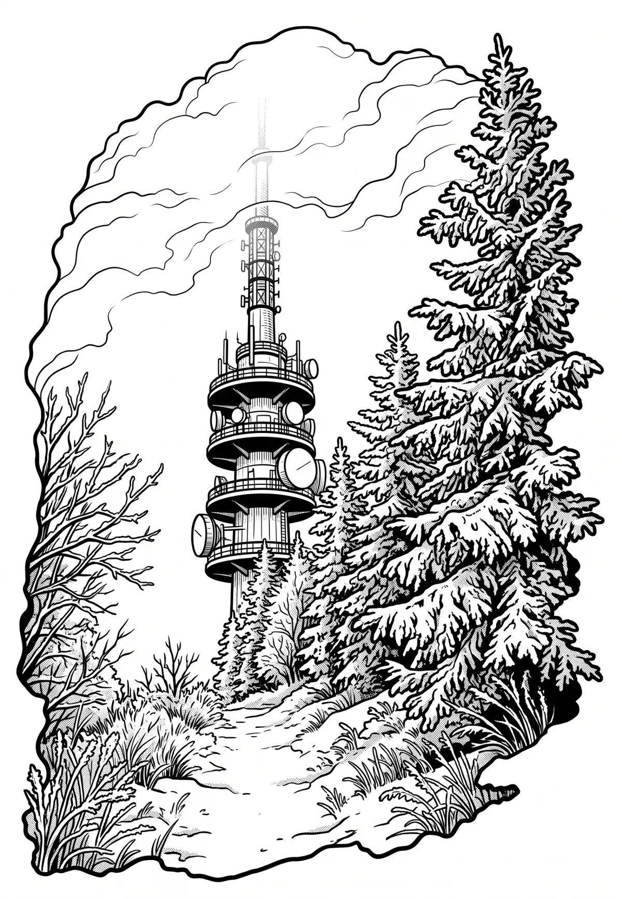

Velká Javořina
Velká Javořina (v místním nářečí Velká Javorina, slovensky Veľká Javorina) je hora v Bílých Karpatech na moravsko-slovenském pomezí. Se svými 970 m n. m. je nejvyšší horou tohoto pohoří a nejvyšším bodem okresu Uherské Hradiště.
Více na Wikipedii